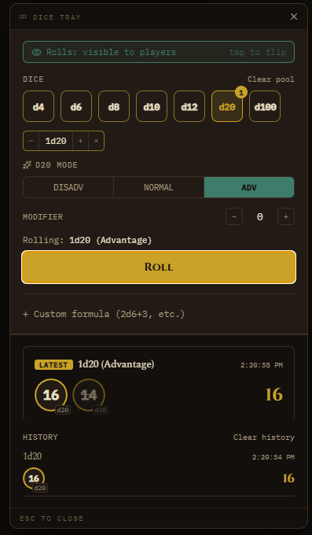

Dice Roller
Reference · Dice Roller
Press Ctrl+D from anywhere in the app, or click the Roll button next to Compendium search in the header, to open the dice tray. It stays open across tab switches and clicks elsewhere in the app, so you can keep it up while checking other screens, only the X button or Escape actually close it.
- Rolls: DM only / visible to players, at the top, tap to flip. Stays as you set it for as long as the tray is open, so you can roll several visible things in a row (initiative for the whole party, say) without re-flipping each time, but always resets back to DM only the moment you close the tray, so it can't stay "on" into a later session and leak a roll you meant to keep secret.
- Click a die (d4 through d100) to add it to your pool, click again for more of the same type. Each queued type also gets a small chip below with its own -/+ and a remove-all button.
- d20 mode shows up once there's a d20 in the pool: Disadvantage, Normal, or Advantage. Only takes effect with exactly one d20 queued, add a second and it grays out, since rolling two d20s on purpose is just two d20s, not Advantage stacked on Advantage.
- Modifier: a flat +/- added to the pool roll.
- A Rolling: ... preview line shows exactly what you're about to roll before you commit.
- Roll: one button, rolls everything currently queued, including the d20 mode if set.
- + Custom formula: collapsed by default, click to expand a text box for anything the pool buttons don't cover, e.g.
2d6+3or1d8-1+1d4. - Each die tumbles briefly before landing on its real result, and a natural 20 or 1 on a d20 gets highlighted.
- History builds up below as you roll, newest first, the latest roll gets a gold LATEST tag and a small eye-off icon if it was DM only. Clear pool and Clear history are separate, clearing one doesn't touch the other.
- Drag the tray by its title bar to move it out of the way.
Roll history resets whenever you switch campaigns or restart the app, it's a scratchpad, not part of the permanent record.
During a live encounter's Focus Mode, the header button is covered by the maximized map, use Ctrl+D or the matching dice icon on the map's own toolbar instead, see Running a Live Session.

Flipping "visible to players" on broadcasts that roll to the Player Window, it shows up there for a few seconds and fades on its own, no manual clearing needed.